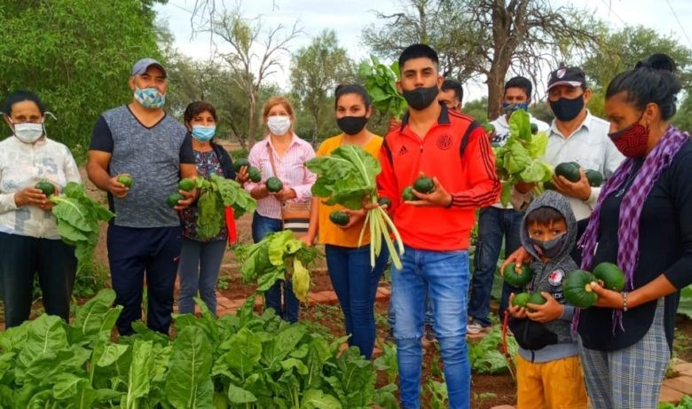
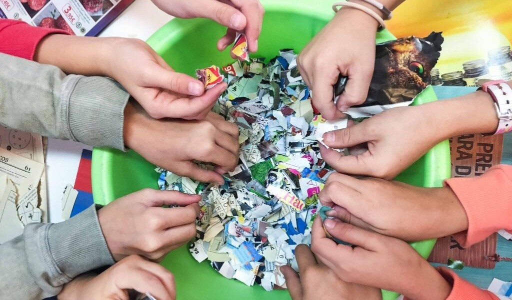
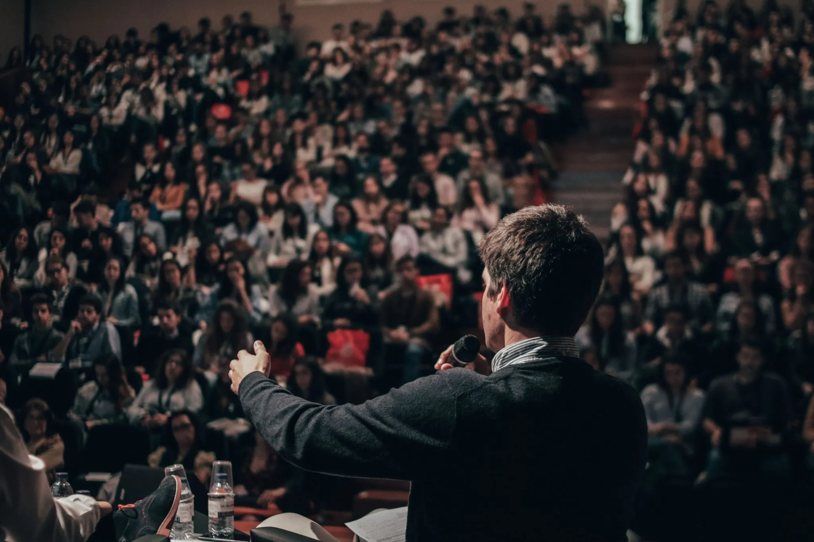
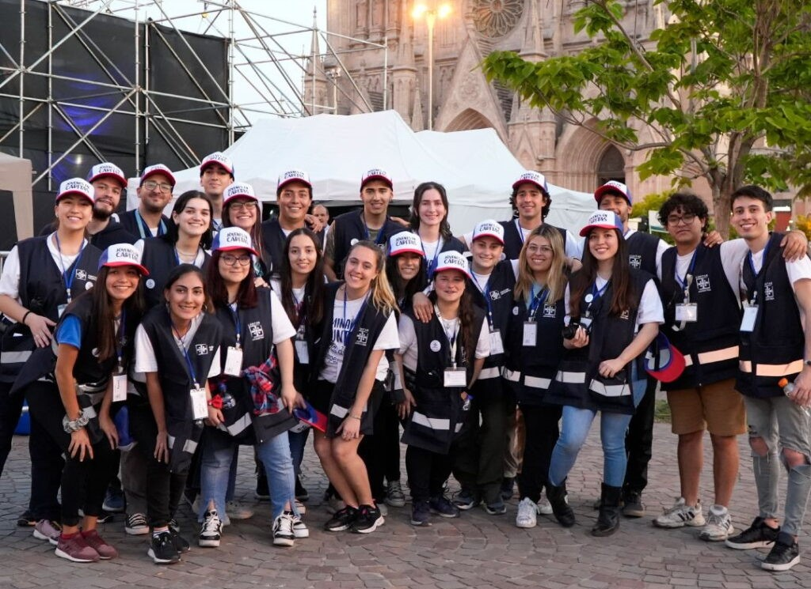
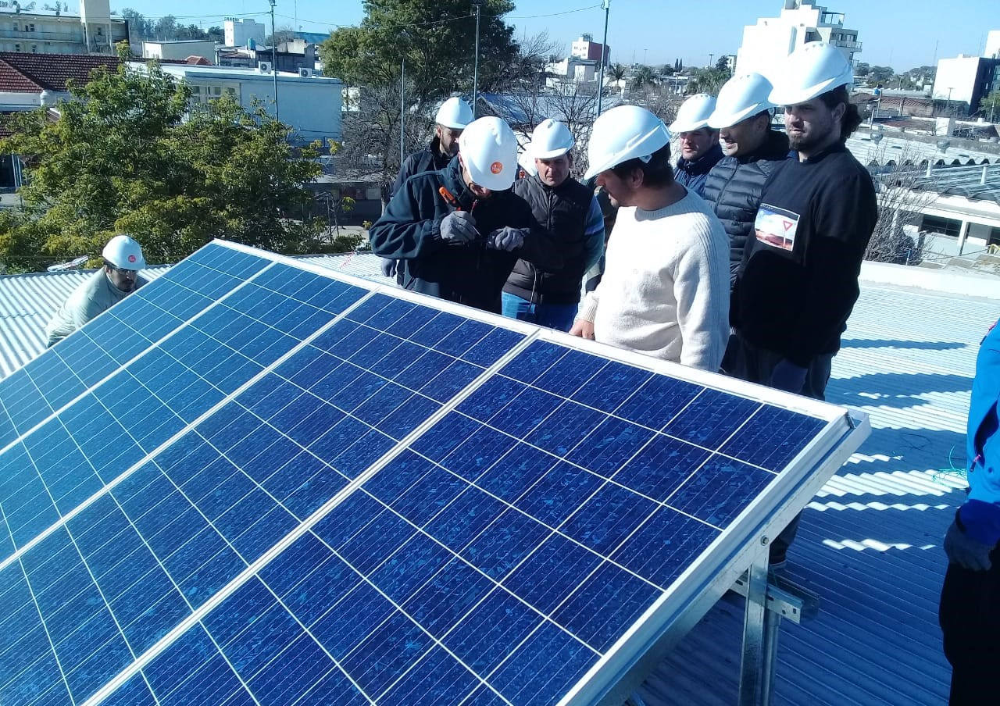
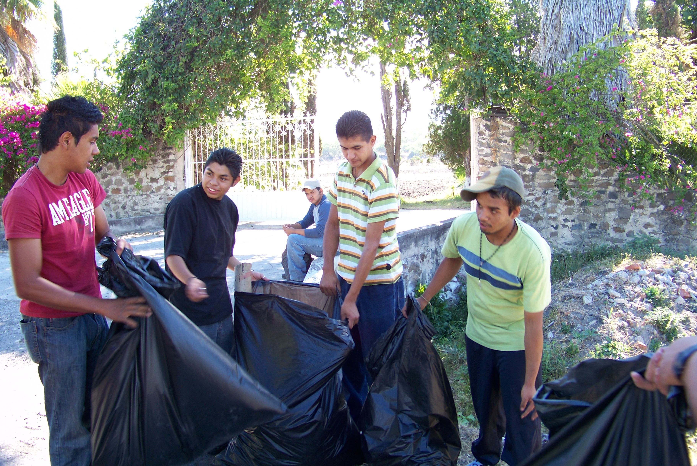
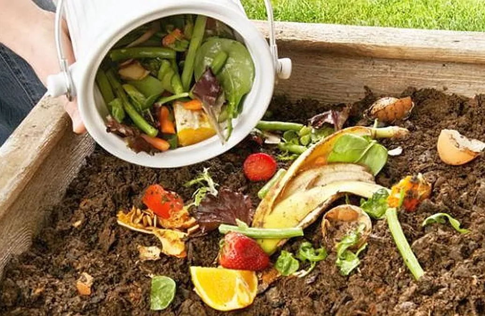

NOTICIAS
El cambio se escribe día a día

Inauguramos nuestra primera huerta comunitaria en Formosa
El pasado abril dimos inicio a una huerta agroecológica junto a vecinas y vecinos del barrio El Amanecer. Este espacio no solo busca producir alimentos saludables, sino también generar talleres educativos sobre soberanía alimentaria.
LEER MAS

Estudiantes crean materiales reciclables en escuela de Tucumán
Un grupo de 5° año trabajó durante tres meses en el desarrollo de papel reciclado y bioplásticos. El proyecto fue parte del programa Aula Verde, y será presentado en la Feria Nacional de Innovación Educativa.
LEER MAS

Nuevo convenio con el Ministerio de Ambiente
Sumamos apoyo institucional para expandir nuestros programas educativos

Voluntariado joven: más de 100 inscriptos
La nueva edición del voluntariado ambiental rompió récord de participación

Sumamos paneles solares a nuestra sede de Salta
Un paso más hacia la autogestión energética de nuestras oficinas

Jornada de limpieza en la costa de San Pedro
Recolectamos más de 250 kg de residuos con la comunidad local
